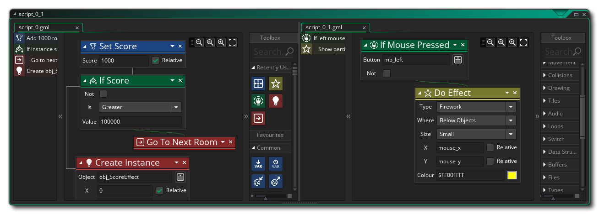

Drag & Drop (DnD™) ist ein visuelles Skript-Tool, mit dem Sie Ihre Spiele erstellen können, ohne Code eingeben zu müssen. Das ist nicht zu sagen, dass Sie nicht Code programmieren, wenn Sie DnD™ verwenden, wie Sie sind, nur, dass Ihr Code erstellt und in einer visuellen Art und Weise unter Verwendung von „Blöcken“ von Aktionen und nicht als Text dargestellt. Aktionen sind einfache Ausdrücke oder Anweisungen, die miteinander "verkettet" werden können, damit eine Instanz eines Objekts etwas tun kann, wenn sie in einem Raum platziert wird. Beispielsweise können Sie eine Aktion in einem Create Event ausführen, um eine Instanz in eine zufällige Richtung zu verschieben eine weitere Aktion in einem Kollisionsereignis, damit sie von den Dingen abprallt, mit denen sie kollidiert (weitere Informationen zu den verschiedenen verfügbaren Ereignissen und ihrer Funktionsweise finden Sie im Abschnitt zu Objektereignissen ). Das Bild oben zeigt ein typisches Objekt, das auf einem zu bearbeitenden Arbeitsbereich geöffnet ist. Es hat ein "Event" -Fenster und ein "Code" -Fenster daran angekettet, und im Codefenster können Sie sehen, wo wir unser DnD™ erstellt haben. Schauen wir uns dieses Fenster etwas genauer an und schauen uns an, welche Möglichkeiten uns zur Verfügung stehen: Im Folgenden finden Sie weitere Informationen zu den einzelnen Abschnitten:
Wenn Sie Ihrem Objekt ein Ereignis hinzufügen, wird im Codefenster eine neue Registerkarte geöffnet, um den Inhalt dieses Ereignisses anzuzeigen. Sie können mehrere Ereignisse hinzufügen und mehrere Registerkarten gleichzeitig öffnen, zwischen ihnen wechseln und sie nach Wunsch bearbeiten. Sie können die Registerkarten auch jederzeit schließen, um Unordnung zu vermeiden (wenn Sie das Ereignis erneut im Objekt auswählen, werden sie erneut geöffnet), und Sie können auf klicken
und ziehen Sie die Registerkarte aus dem Fenster in die eigene Codefenster, in welchem Fall das Schließen des Objekts oder das Codefenster wird nicht das neue Fenster schließen. Tabs können nach links oder rechts gezogen werden, um auch neu geordnet zu werden. `
Wenn Sie Ihrer Veranstaltung Aktionsblöcke hinzufügen, erscheinen diese in "Kurzschrift" als einfacher englischer Überblick über die Vorgänge. Die Übersichtsreihenfolge ist die Reihenfolge, in der die einzelnen Aktionsblöcke für dieses Ereignis ausgeführt werden, und Sie können auf klicken
In diesem Arbeitsbereich ziehen Sie Aktionen aus der Toolbox, um Ihren DnD™ -Code zu erstellen. Klicken
Wenn Sie Ihrem Code Aktionsblöcke hinzufügen, werden diese optisch aneinander "verkettet", um die Reihenfolge anzugeben, in der verschiedene Aktionen ausgeführt werden. Ob diese Kette erstellt wird, hängt jedoch vom ursprünglichen Block ab, der verwendet wurde. Zum Beispiel if Block hat zwei Ketten - eine zu den Blöcken, die aufgerufen werden sollen, wenn die Bedingung geprüft wird true und dann der nächste Block danach. Weitere Informationen zum Erstellen von Aktionsblöcken in Code finden Sie im folgenden Abschnitt.
Im Arbeitsbereich Aktionsblock können Sie die mittlere Maustaste verwenden
um herum zu rollen und das Mausrad, um die Aktionsliste nach oben oder unten zu scrollen. Wenn Sie halten
Während Sie das Mausrad bewegen, scrollt die Ansicht nach links / rechts und wenn Sie gedrückt halten
/
Wenn Sie das Mausrad bewegen, wird die Ansicht vergrößert und verkleinert, sodass Sie mehr über den Arbeitsbereich mit den Aktionen sehen können. Sie können auf eine Aktion aus der Aktionsliste auf der linken Seite klicken, um sich auf diese Aktion zu konzentrieren, indem Sie den Zoom und die Position zurücksetzen. Beachten Sie auch, dass Sie die Größe der Aktionsblöcke ändern können, indem Sie die Maus zu den Kanten des Blocks bewegen und dann - wenn der Cursor sich ändert - in die gewünschte Richtung ziehen.
Sie können auch mit der rechten Maustaste klicken
an einer beliebigen Stelle im DnD™ -Arbeitsbereich, um das RMB-Menü aufzurufen:
Dieses Menü hat folgende Optionen:
- Ausschneiden / Kopieren / Einfügen: Damit können Sie jede im Arbeitsbereich ausgewählte Aktion ausschneiden, kopieren oder einfügen. Beachten Sie, dass Sie verwenden können
- Deaktivieren: Dieser Befehl wird die Aktion (oder Aktionen) ausgewählt deaktivieren. Wenn eine Aktion deaktiviert ist, ist sie immer noch im Arbeitsbereich sichtbar, wird aber beim Kompilieren des Spiels nicht ausgeführt. Auf diese Weise können Sie Aktionen zum Testen und Debuggen hinzufügen / entfernen. Das Bild unten zeigt einige DnD™ -Code mit deaktivierten Aktionen:
Sie können sehen, dass die Aktionen " If Score " und " Go To Next Room "wurden deaktiviert und werden daher übersprungen, wenn das Spiel getestet oder kompiliert wird.
- Haltepunkt umschalten: Dieser Befehl schaltet einen Haltepunkt für die ausgewählte Aktion ein oder aus. Ein Haltepunkt ist einfach ein Punkt im DnD™ -Code, an dem der Debugger stoppen sollte, wenn das Spiel im Debug-Modus ausgeführt wird. Eine Aktion mit einem zugewiesenen Haltepunkt wird hervorgehoben, wie in der Abbildung unten gezeigt. If Health "Aktion wurde als Haltepunkt festgelegt):
- Alle Haltepunkte löschen: Mit diesem Befehl können Sie alle Haltepunkte aus dem DnD™ -Code löschen.
- Alles schließen: DnD™ -Aktionen können entweder reduziert oder erweitert werden, wobei eine minimierte Aktion lediglich den Namen der Aktion, aber keine der internen Werte anzeigt, wodurch der verfügbare Platz für den Arbeitsbereich maximiert wird. Beispielsweise:
Wie Sie sehen können, benötigen die Aktionen viel weniger Platz und Sie können anhand der kurzen Beschreibung auf der rechten Seite sehen, was sie tun.
- Layout zurücksetzen: Dadurch wird der DnD™ -Arbeitsbereich zurückgesetzt, die Zoomstufe wird auf 100% gesetzt, auf die aktuell ausgewählte Aktion fokussiert und alle (auch alle) minimierten Aktionen erweitert.
- Live-Vorschau: Wenn Sie diese Option auswählen, aktivieren oder deaktivieren Sie das Code-Vorschaufenster von DnD™ zu GML ( GameMaker Language). Dies wird auf der Seite Ändern von DnD™ To Code näher erläutert.
- In GML konvertieren: Damit werden alle Ihre Aktionen im aktuellen Ereignis in GML ( GameMaker Language) -Code konvertiert. Seien Sie vorsichtig damit, da Sie GML nicht in die DnD™ -Aktionen, aus denen sie erstellt wurde, konvertieren können. Sie können das Ereignis vom Code zurück in ein DnD™ -Ereignis konvertieren, aber jeder Code wird einfach in ein Execute Code Aktion.
- Single Pane / 2 Columns / 3 Columns: Mit diesen Optionen kann der aktuelle Workmspace in 1, 2 oder 3 verschiedene "Scheiben" aufgeteilt werden. Jeder Bereich ist ein separater Arbeitsbereich, in den Skripte oder Ereignisse gezogen werden können, sodass Sie zwei oder mehr DnD™ -Code-Blöcke gleichzeitig bearbeiten und vergleichen können. Das Bild unten zeigt zwei Skripte in einem Fenster in einem eigenen Arbeitsbereich: 
In der Toolbox werden alle DnD™ -Aktionen gespeichert, wobei verschiedene Abschnitte Sammlungen (Bibliotheken) von ähnlichen oder ähnlichen Aktionen enthalten. Jede Sammlung von Aktionen bezieht sich auf ein bestimmtes Thema oder einen gemeinsamen Zweck und Sie klicken einfach darauf
Eine vollständige Liste der verfügbaren Aktionen sowie der Argumente, die sie ausführen und wie sie verkettet werden können, finden Sie im Abschnitt Drag & Drop-Referenz.


Auf den folgenden Seiten gehen in ein bisschen mehr Tiefe, wie Aktionsblock Code zu konstruieren, sowie wie der Umfang der Maßnahmen zu setzen, um verschiedene Dinge in Ihrem Projekt und andere wichtige Details zu beeinflussen: